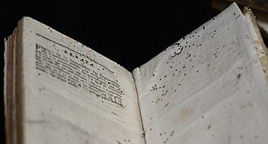
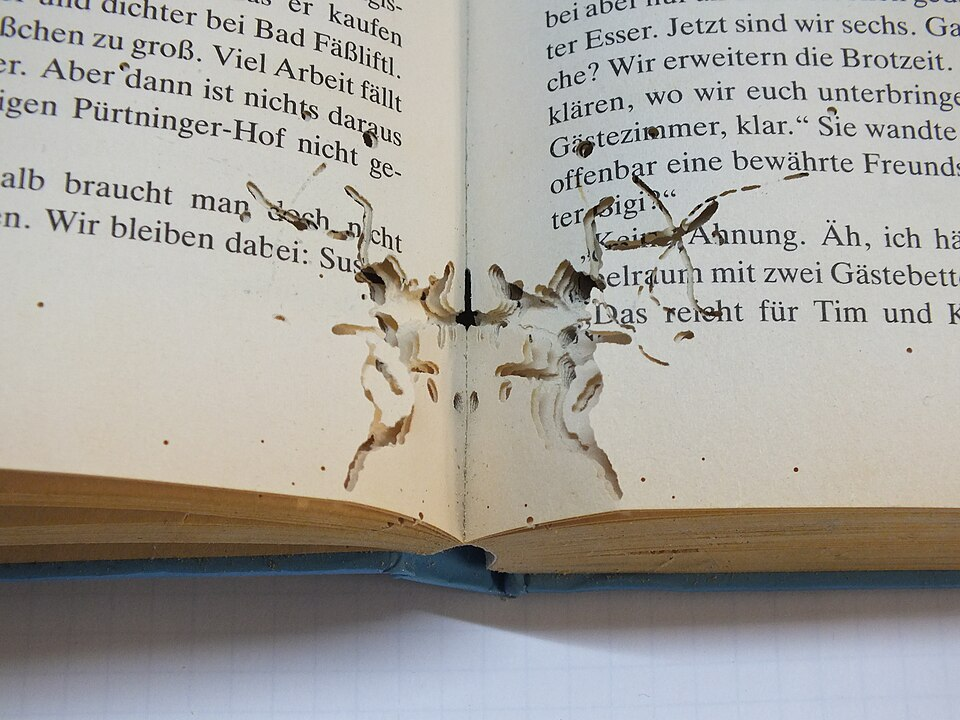
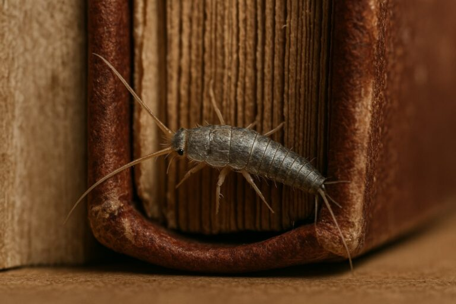
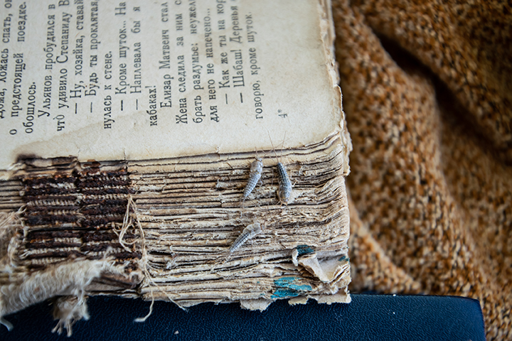
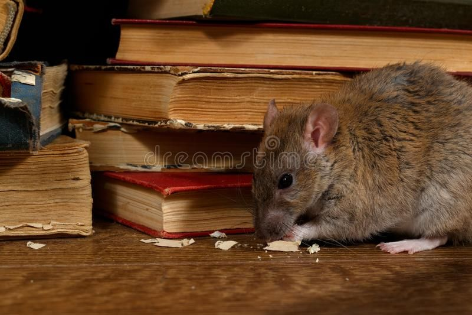

Gallery: Visual Signs of Damage
Illustrative panels highlight typical biological damage found in library collections.

Insect tunneling

Bookworm traces

SilverFish

Silverfish
 Rats on Books
Rats on Books

Rats on Books
Spore staining
Binding delamination